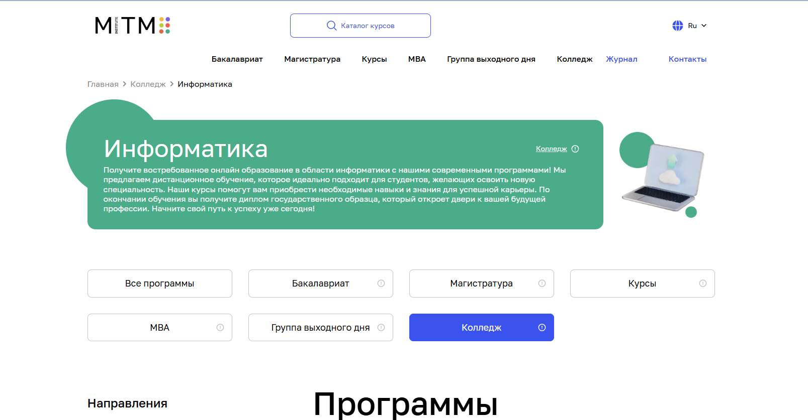
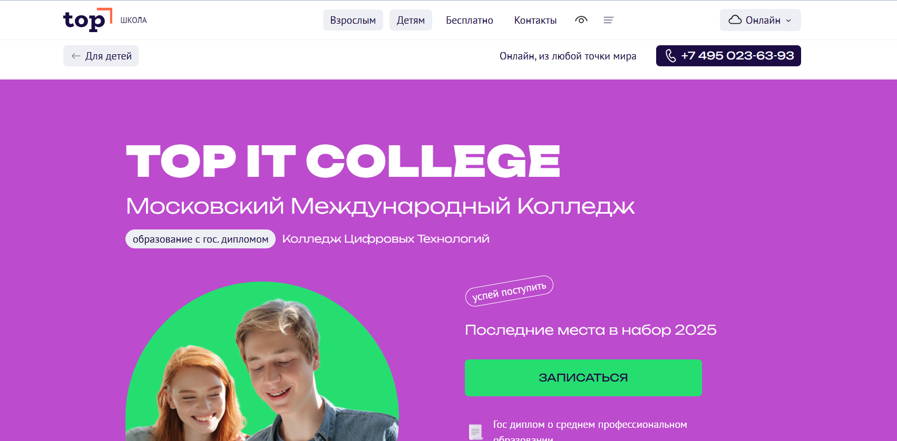
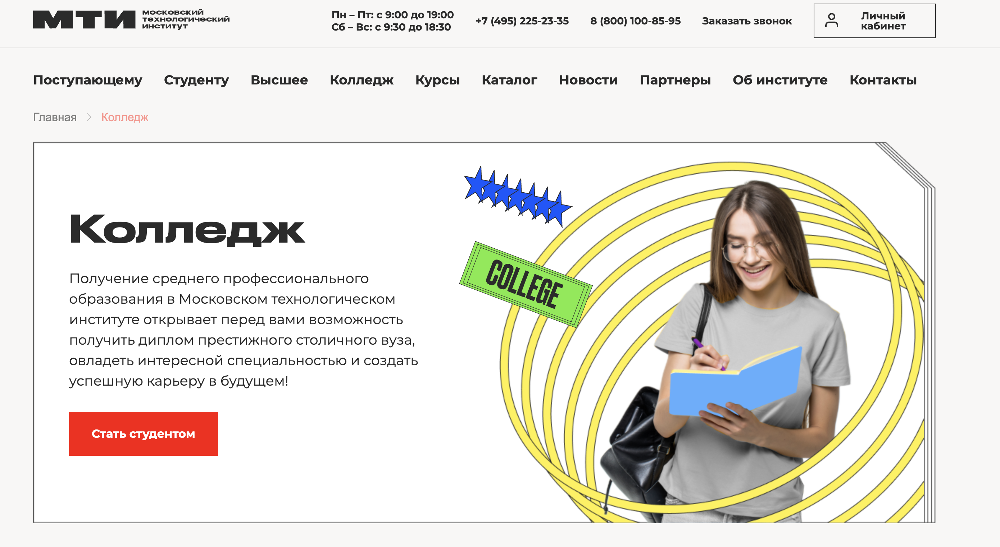
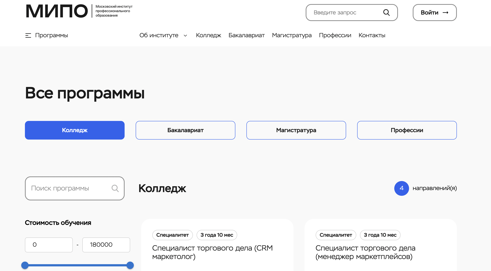
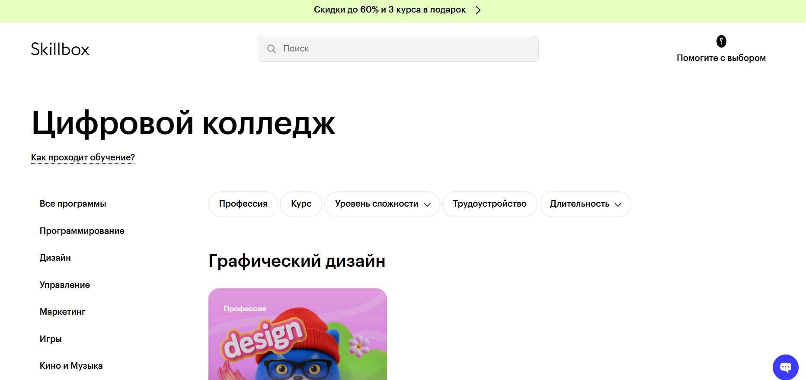
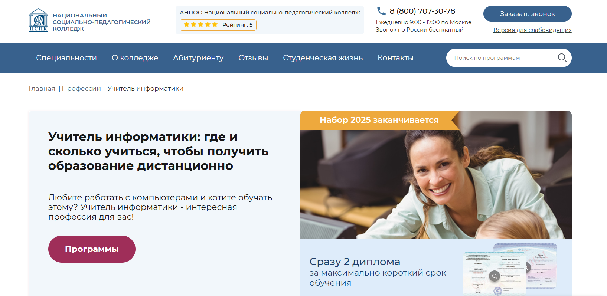
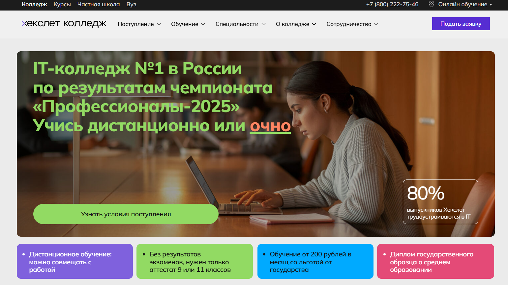
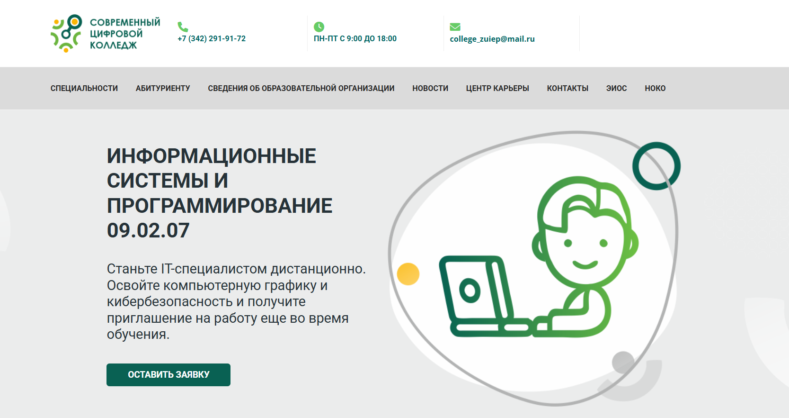
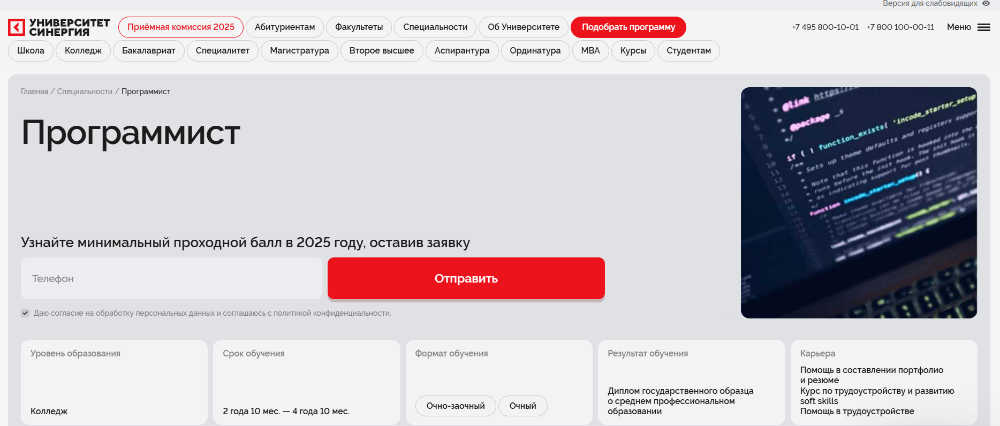

Дистанционные IT-колледжи — это формат профессионального образования, в котором студенты проходят учебные программы в онлайн формате, используя современные образовательные технологии и платформы. Такие колледжи предлагают удобный формат учебы, совмещающий теорию и практику в области информационных технологий, программирования и других IT-специальностей. Образовательные программы строятся с учетом применения современных технологий и позволяют студенту осваивать материал в удобном графике, сохраняя доступ к образовательным материалам и занятиям с преподавателями. Выпускники получают дипломы государственного образца, что открывает возможности трудоустройства и продолжения учебы в вузах. Колледжи предлагают разные формы обучения — от полностью онлайн до совмещающих очное обучение с дистанционными занятиями, а сроком обучения соответствуют стандартам средних профессиональных заведений. Мы составили рейтинг дистанционных IT-колледжей, чтобы помочь абитуриентам выбрать специальность и колледж с качественными учебными программами и современными образовательными платформами.
Информация обновлена:
ТОП дистанционных IT-колледжей
- 🏆 Maxitet IT-колледж цифровых профессий
- 🏆 Московский институт технологий и управления (колледж) (по промокоду onlinekursy скидка 🎁 15% на заказ)
- 🏆 TOP IT COLLEGE
- Московский технологический институт (колледж)
- Московский Институт Профессионального Образорвания (колледж) (по промокоду onlinekursy действует скидка 🎁 10% )
- Цифровой колледж Skillbox
- Открытый социально-экономический колледж ( ОСЭК )
- Национальный социально-педагогический колледж (НСПК)
- Хекслет Колледж
- Современный цифровой колледж
- Колледж Синергия
Вам могут быть интересны ВУЗы с программами дистанционного высшего образования
- 🏆 Московский институт психологии (по промокоду onlinekursy скидка 🎁 10%)
- Психолого-педагогическое образование (онлайн-бакалавриат)
- Психология (онлайн-бакалавриат)
- Педагогическое образование (онлайн-бакалавриат)
- 🏆 Онлайн-Институт психологии Smart
- 🏆 Психодемия (по промокоду OnlineKursy действует скидка 🎁 5000 руб)
- Психология личности (магистратура)
- Психология управления - Бизнес-психология в цифровой среде (магистратура)
- Московский институт технологий и управления (по промокоду onlinekursy скидка 🎁 15%)
- Психологическое консультирование
- Клиническая психология
- Психоанализ
- Психология семейных отношений
- Коррекционная психология с основами логопедии
- Психология управления
- Педагог-психолог
- Логопед-дефектолог
- Коучинг и психологическое консультирование
- Организационная психология
- Психология и педагогика дополнительного образования детей
- Психология образования
- Московский Институт Профессионального Образования (по промокоду onlinekursy скидка 🎁 10%)
- Практическая психология
- Коучинг и психологическое консультирование
- Социальная психология
- Организационная психология
- ИППСС
- Психология семейных отношений
- Организационная психология
- Практическая психология
- Коучинг
- Детская психология
- Нетология
- Финансы и анализ данных
- Разработка IT‑продуктов и информационных систем
- Программные системы и автоматизация процессов разработки
- Проектный менеджмент
- Медиакоммуникации
- LegalTech: автоматизация юридических процессов
- Кибербезопасность
- Цифровые продукты: создание и развитие
- Управление цифровыми проектами
- Продуктовый дизайн
- Инженерия данных
- Продуктовый маркетинг и аналитика
- Разработка IT-продукта
- Инженерия машинного обучения
- Прикладной искусственный интеллект
- Современные технологии безопасных систем
- Skillfactory
- Науки о данных и машинное обучение
- Информационная безопасность
- Обработка естественного языка (NLP) в лингвистике и IT
- Разработка программного обеспечения
- Компьютерное зрение и нейронные сети
- Прикладной анализ данных и машинное обучение
- Яндекс Практикум
- Кибербезопасность
- Управление IT‑продуктами
- Науки о данных и искусственный интеллект
- Фронтенд- и бэкенд-разработка
- DevOps-инженер облачных сервисов
- Московский Институт Технологий и Управления (по промокоду onlinekursy скидка 🎁 15%)
- Юриспруденция
- Дизайн
- Информатика
- Маркетинг
- Менеджмент
- Строительство
- Теплоэнергетика и теплотехника
- Техносферная безопасность
- Электроэнергетика и электротехника
- Экономика
- Педагогическое образование
- Юриспруденция
- Дизайн
- Информатика
- Маркетинг
- Менеджмент
- Строительство
- Экономика
- Педагогическое образование
- Московский Институт Профессионального Образования (по промокоду onlinekursy скидка 🎁 10%)
- Московский Технологический Институт (МТИ)
ВУЗы с программами профессиональной переподготовки
- НАДПО (по промокоду onlinekursy действует скидка 🎁 5%)
- Московский институт профессионального образования (по промокоду onlinekursy действует скидка 🎁 10%)
- Moscow Business Academy (по промокоду onlinekursy скидка 🎁 10%)
- Eduson Academy (по промокоду onlinekursy скидка 🎁 5%)
- НИИДПО
- Talentsy (по промокоду EDPART5 скидка 🎁 5%)
- НЦРДО (по промокоду onlinekursy действует скидка 🎁 5%)
- Институт профессионального образования
- Moscow Business School
- Русская Школа Управления
- АПОК
- НИПКЭФ (по промокоду onlinekursy действует скидка 🎁 5%)
- SF Education (по промокоду onlinekursy скидка 🎁 15%)
Онлайн-Бакалавриат по психологии
Онлайн-магистратура по психологии
Онлайн-Бакалавриат по психологии
Направления онлайн-бакалавриата по психологии от ИППСС:
Онлайн-Бакалавриат:
Онлайн-магистратура:
Онлайн-магистратура:
Онлайн-магистратура:
Отличительные преимущества каждого дистанционного IT-колледжа
Maxitet IT-колледж цифровых профессий: гибридное обучение, 80% практики, возможность выбрать специальность после 1 курса, стажировки с первого курса, интеграция ИИ в программы.
Московский институт технологий и управления: полностью дистанционное обучение, гибкие сроки и график, доступная стоимость от 6670 ₽/мес, программы от колледжа до MBA.
TOP IT COLLEGE: очный и онлайн форматы, до 80% практики, стажировки в IT-компаниях, активная студенческая жизнь и хакатоны.
МТИ: Гибкие форматы обучения – актуальные практические программы – поддержка кураторов – современная электронная среда – возможность продолжения образования в вузе – ориентир на трудоустройство и профессиональные навыки.
МИПО: гибкий дистанционный формат обучения, практическая направленность программ, поддержка опытных кураторов, широкий выбор направлений, доступность материалов 24/7, возможность совмещать учёбу с работой, ориентир на современные требования рынка труда.
Цифровой колледж Skillbox: онлайн обучение, скидки до 60%, бесплатная профориентация, дипломы гособразца, гибкий график.
ОСЭК — Графический дизайн: специализация на дизайне и мультимедиа, очная и онлайн формы, практика в профильных компаниях, от 35 000 ₽/семестр.
НСПК: упор на IT и педагогические направления, доступные цены от 28 000 ₽/семестр, очная и дистанционная формы, дипломы гособразца.
Хекслет Колледж: поддержка государства — от 140 ₽/мес, 2000+ часов практики, гарантированные стажировки у партнеров, широкий выбор IT-специальностей.
Современный цифровой колледж: онлайн-обучение в вечернее время и по выходным, практика в крупных компаниях, от 39 850 ₽/год, акцент на ИТ-направлениях.
Университет Синергия: образование от колледжа до магистратуры, гибкая система оплаты от 150 ₽/мес, разнообразные форматы (онлайн, очно, заочно), сильная база по ИТ и управлению.
1. 🏆 Maxitet IT-колледж цифровых профессий

Официальный сайт: maxitet.ru
- Стоимость: Обучение возможно с оплатой по доступным тарифам, включая рассрочку от 150 рублей в месяц, при этом часть расходов покрывает государство.
- Формат: Используются современные образовательные технологии и платформы — очные занятия в аудиториях, гибридный формат, онлайн обучение с применением практических заданий, проектной работы и цифровых инструментов.
- Продолжительность: Сроком обучения 3–4 года в зависимости от выбранного направления и формы обучения.
- Документ: По окончании выпускники получают дипломы государственного образца о среднем профессиональном образовании.
Этот колледж предлагает современные формы обучения, совмещающие онлайн формат и очное обучение в аудиториях. Студенты проходят практику уже с первого курса, что позволяет им приобрести опыт, востребованный работодателями. Образовательные программы построены на использовании современных технологий, включая искусственный интеллект, который интегрирован во все учебные программы. Выпускники получают дипломы государственного уровня и навыки, позволяющие успешно продолжать обучение в вузах или сразу начинать карьеру в сфере IT и смежных направлениях. Учебные программы соответствуют требованиям рынка, а образовательные платформы обеспечивают удобный доступ к материалам и проектной работе. Благодаря современным образовательным технологиям, студенты получают не только знания, но и реальные навыки работы в командах. Программы среднего профессионального образования дают возможность выбрать специальность по душе и построить карьеру с гарантией трудоустройства.
Направления подготовки:
- Программирование
- Дизайн
- Реклама
- Экономика
- Цифровая экономика
- Графический дизайн
- Веб-разработка
- Цифровой маркетинг
- Продуктовый дизайн
- Искусственный интеллект
- Медиакоммуникации
- Бренд-менеджмент
- Видеодизайн
Преимущества и особенности:
- Гибридное обучение — сочетание очной формы и онлайн формата занятий.
- 80% учебных программ посвящены практике и проектной деятельности.
- Возможность выбрать специальность после первого курса, опробовав несколько направлений.
- Студенты проходят стажировки в IT-компаниях уже с 1 курса.
- Применение современных образовательных технологий и информационных систем.
- Государственные образовательные стандарты и дипломы государственного образца.
- Развитое студенческое сообщество с мероприятиями и проектами для личностного роста.
- Поддержка карьерного офиса и помощь в трудоустройстве после окончания колледжа.
2. 🏆 Московский институт технологий и управления

Официальный сайт: mitm.institute
- Стоимость: От 6670 ₽ в месяц в зависимости от направления и срока обучения. Доступны рассрочка и помесячная оплата без переплат.
- Формат: Образовательные программы реализуются в дистанционном формате с использованием современных образовательных технологий — онлайн занятия, практические задания, тесты, консультации с преподавателями.
- Продолжительность: От 3 лет 6 месяцев до 4 лет 10 месяцев в зависимости от выбранной программы и форматов обучения.
- Документ: По окончании студенты получают дипломы государственного образца, подтверждающие уровень профессионального образования.
Институт использует современные образовательные платформы, что позволяет студенту совмещать учебу с работой или другими делами. Образовательные программы адаптированы под требования рынка труда и формируют у студентов практические навыки для работы в сфере информационных технологий и смежных направлений. Учебные материалы подготовлены с учетом применения современных технологий и форматов обучения, что делает процесс максимально удобным и доступным. Студенты проходят обучение онлайн и получают возможность общения с преподавателями в удобном формате. Выпускники получают дипломы государственных образовательных стандартов, которые признаются работодателями по всей стране. Учеба выстроена так, чтобы позволить студенту самостоятельно регулировать график занятий и совмещать учебный процесс с личными планами. Возможность перевода из других вузов и доступ к актуальным учебным материалам делают обучение особенно привлекательным.
Направления подготовки:
- Информационные системы и программирование
- Специалист по информационным системам
- Программист
- Специалист по мехатронике и робототехнике
Преимущества и особенности:
- Программы реализуются в онлайн формате, что обеспечивает удобный доступ из любой точки мира.
- Использование современных образовательных технологий и платформ для максимального удобства студентов.
- Дипломы государственного образца, гарантирующие официальное подтверждение квалификации.
- Гибкие формы обучения — от очной формы до полностью дистанционного формата.
- Возможность рассрочки оплаты без переплат и прозрачные условия финансирования.
- Индивидуальная поддержка — помощь в поступлении, консультации кураторов и сопровождение до получения диплома.
- Выпускники получают востребованные навыки и перспективы трудоустройства в сферах информационных технологий, программирования и смежных профессий.
- Специальные льготы и скидки для разных категорий студентов, включая победителей олимпиад и выпускников колледжей с отличием.
3. 🏆 TOP IT COLLEGE

Официальный сайт: online.top-academy.ru
- Стоимость: От 19 602 ₽ в месяц в зависимости от выбранной программы и формы обучения.
- Формат: Очные и дистанционные форматы обучения с применением современных образовательных технологий – видеолекции, практические задания, тестирование, стажировки в компаниях-партнерах.
- Продолжительность: От 2 до 4 лет в зависимости от направления и учебной программы.
- Документ: Выпускники получают дипломы государственного образца о среднем профессиональном образовании.
Учебное заведение сочетает практико-ориентированный подход и современные образовательные платформы, что позволяет студентам проходить обучение в удобном формате – как очном, так и онлайн. Учебные программы выстроены на применении реальных кейсов, взаимодействии с работодателями и включают до 80% практики. Студенты получают доступ к образовательным материалам и современным системам, что дает возможность совмещать учебу с работой. По окончании колледжа выпускники получают дипломы государственного образца и могут продолжить образование в вузах или начать карьеру в сфере информационных технологий. Использование онлайн формата и очного обучения обеспечивает гибкий график, а образовательные программы адаптированы под требования рынка труда. Благодаря государственным образовательным стандартам и партнерству с IT-компаниями студенты получают реальный опыт и навыки, востребованные работодателями.
Направления подготовки:
- Разработка программного обеспечения
- Компьютерная графика и дизайн
- Сети и кибербезопасность
- Интернет-маркетинг и PR
- Специалист по искусственному интеллекту
- Юриспруденция в IT
Преимущества и особенности:
- Программы среднего профессионального образования с возможностью выбора очной формы или онлайн формата.
- Студенты проходят стажировки в ведущих IT-компаниях и участвуют в открытых защитах проектов.
- Гибкие формы обучения позволяют студенту совмещать учебу с другими занятиями.
- Современные образовательные технологии обеспечивают доступ к актуальным учебным материалам.
- По окончании обучения выпускники получают дипломы государственного образца.
- Учебные программы направлены на карьеру в IT – многие студенты начинают трудоустройство еще до окончания колледжа.
- Активная студенческая жизнь: хакатоны, экскурсии, мастер-классы и тренинги.
- Упрощенный процесс поступления и возможность обучения на базе 9 или 11 классов.
4. Колледж Московского технологического института

Официальный сайт: mti.moscow
- Стоимость – обучение доступно от ориентировочно 80 000 ₽ в год в зависимости от программы и формы обучения, предусмотрены гибкие варианты оплаты и лояльные условия для студентов
- Формат – очное, заочное и дистанционное обучение с электронными материалами, практическими заданиями и тестами для самостоятельной работы
- Продолжительность – сроки обучения зависят от специальности и формы, стандартно от 1 года до нескольких лет
- Документ – по завершении обучения выпускники получают диплом колледжа государственного образца
Колледж Московского технологического института – это образовательное подразделение крупного столичного вуза, предлагающее среднее профессиональное подготовку по востребованным направлениям. Программы ориентированы на практические навыки и дают фундаментальные знания, необходимые для старта карьеры или продолжения учёбы в высшем образовании. Студенты получают доступ к библиотеке, электронным ресурсам и поддержке кураторов в процессе обучения. Форма обучения позволяет совмещать учёбу с работой или личными делами. Образовательный процесс выстроен так, чтобы выпускник мог адаптироваться к профессиональной среде и получить ощутимые компетенции уже в период учёбы.
Направления подготовки:
- Строительство и эксплуатация зданий и сооружений
- Монтаж, наладка и эксплуатация электрооборудования промышленных и гражданских зданий
- Информационные системы и программирование
- Экономика и бухгалтерский учет (по отраслям)
- Банковское дело
Преимущества и особенности:
- акцент на практические навыки и профессиональную подготовку
- гибкие формы обучения – очная, заочная, дистанционная
- поддержка кураторов и доступ к современным электронным материалам
- диплом колледжа, признанный на профессиональном рынке
- возможность продолжить образование в высшем институте
Отзывы учеников:
Студенты отмечают удобный формат обучения, возможность совмещать учёбу с работой и доступ к онлайн-ресурсам. Многие подчеркивают, что преподаватели доступны для консультаций и обучение построено таким образом, что материалы легко усваиваются даже при самоорганизации. Положительные отзывы включают благодарность за помощь кураторов и насыщенный учебный материал, который подходит для практических задач будущей профессии.
Перейти на официальный сайт колледжа
5. Московский институт профессионального образования

Официальный сайт: mipo.msk.ru
- Стоимость – программы доступны в различных ценовых диапазонах в зависимости от направления и длительности обучения, возможны скидки и рассрочки.
- Формат – обучение дистанционно через собственную образовательную платформу с доступом к материалам и преподавателям-практикам.
- Продолжительность – от коротких программ повышения квалификации до многолетнего освоения высшего образования.
- Документ – по завершении выдается диплом или документ установленного образца с внесением в федеральный реестр.
Московский институт профессионального образования – современное образовательное учреждение, ориентированное на востребованные компетенции в различных профессиональных сферах. Институт предлагает широкий спектр программ, от практических курсов до высшего образования, с акцентом на навыки, актуальные для рынка труда. Дистанционный формат позволяет сочетать обучение с работой или другими делами, сохраняя высокую гибкость графика. Преподаватели – практики в своих областях, что делает образовательный процесс прикладным и ориентированным на карьерный рост. Учебные материалы разработаны с учётом современных требований и изменений индустрий. Образовательная платформа поддерживает круглосуточный доступ к курсам и обратную связь от кураторов.
Направления подготовки:
- Высшее образование – бакалавриат по востребованным профессиям (IT, управление, экономика и др.)
- Высшее образование – магистратура
- Профессиональная переподготовка по более чем 19 направлениям
- Повышение квалификации
Преимущества и особенности:
- ориентация на практические навыки и компетенции для рынка труда;
- обучение доступно из любой точки мира в удобное время;
- большой выбор профессиональных направлений и программ;
- преподаватели – практикующие специалисты;
- курсы подходят как для начинающих, так и для опытных специалистов;
- есть поддержка кураторов и техническая помощь студентам;
- есть возможности для карьерного роста после обучения.
Отзывы учеников:
Студенты чаще отмечают удобный дистанционный формат обучения, понятную подачу учебных материалов и поддержку кураторов. Многие пишут о практической пользе полученных знаний для профессионального роста и смены профессии. Также отмечают возможность совмещать учёбу с работой и гибкий график процесса.
Перейти на официальный сайт колледжа
6. Цифровой колледж Skillbox

Официальный сайт: skillbox.ru
- Стоимость: Уточнять у менеджеров. Скидки до 60% и специальные предложения — до трех курсов в подарок.
- Формат: Образовательные программы реализуются в онлайн формате с применением современных образовательных технологий — видеолекции, практические задания, тесты, обратная связь от преподавателей и профориентологов.
- Продолжительность: Основные профессии — 34 месяца, дополнительная профориентация — 2 месяца.
- Документ: После окончания обучения выпускники получают дипломы государственного образца.
Цифровой колледж Skillbox предлагает современные форматы обучения, ориентированные на практику и удобный формат онлайн занятий. Программы среднего профессионального образования построены с учетом применения информационных технологий и требований рынка труда. Студенты проходят обучение в дистанционном формате, что позволяет совмещать учебу с работой и личными делами. Учебные программы разработаны так, чтобы студенты получали актуальные знания и навыки, востребованные работодателями. Колледжи предлагают возможность пройти бесплатную профориентацию — тестирование и консультацию с профориентологом для выбора специальности. По окончании обучения выпускники получают дипломы государственного образца, подтверждающие квалификацию. Использование образовательных платформ позволяет студенту учиться в удобных условиях, сохраняя доступ к материалам и занятиям. Окончание колледжа гарантирует получение образования, соответствующего государственным стандартам, и открывает путь к трудоустройству в ведущих сферах.
Направления подготовки:
- Графический дизайн
- Fullstack-разработка
- Frontend-разработка
- Python-разработка
- Комплексная профориентация
Преимущества и особенности:
- Современные формы обучения с использованием онлайн формата и дистанционных технологий.
- Гибкий график учебы, позволяющий совмещать занятия с работой и личной жизнью.
- Возможность пройти профориентацию и выбрать специальность с помощью специалистов.
- Программы среднего профессионального образования, соответствующие федеральным стандартам.
- Выпускники получают дипломы государственного образца, признанные работодателями.
- Поддержка студентов на всех этапах учебы — от поступления до получения диплома.
- Использование современных технологий обучения и доступа к образовательным материалам в любое время.
- Специальные акции и скидки, делающие образование более доступным.
7. Открытый социально-экономический колледж ( ОСЭК ) - Графический дизайн

Официальный сайт: pk.i-spo.ru
- Стоимость: Обучение доступно по государственным образовательным программам, возможны льготы и скидки для абитуриентов от 35 000 ₽ в семестр.
- Формат: Используются современные образовательные технологии – очная форма, онлайн формат, а также комбинированные занятия с применением платформы дистанционного обучения.
- Продолжительность: Сроком обучения от 2 до 4 лет в зависимости от выбранной формы обучения и программы среднего профессионального образования.
- Документ: После окончания колледжа выпускники получают дипломы государственного образца о среднем профессиональном образовании.
Колледж графического дизайна предлагает студентам современные образовательные программы, которые ориентированы на применение информационных технологий в процессе учебы. Форматы обучения построены так, чтобы студенты проходили как практические занятия в аудиториях, так и занятия в онлайне с доступом к учебным материалам. Программы среднего профессионального образования позволяют студенту выбрать специальность и совмещать учебу с работой. В колледже активно применяются образовательные платформы, которые обеспечивают удобный формат для прохождения занятий и тестов. Выпускники получают дипломы государственного образца, что гарантирует признание их квалификации. Современные образовательные технологии позволяют студентам получать актуальные навыки и применять их на практике. Использование информационных технологий в обучении обеспечивает высокий уровень подготовки. Колледжи предлагают гибкие формы обучения – от очных классов до онлайн форматов. Благодаря этому студенты получают доступ к качественным учебным программам, а окончание обучения открывает возможности для дальнейшего трудоустройства или поступления в вузы.
Направления подготовки:
- Графический дизайн
- Дизайн мультимедиа
- Компьютерная графика и анимация
- Рекламная графика
- Программирование в сфере дизайна
Преимущества и особенности:
- Современные формы обучения с использованием онлайн формата и очных занятий.
- Программы среднего профессионального образования, адаптированные под современные образовательные технологии.
- Выпускники получают государственные дипломы, подтверждающие квалификацию.
- Колледж применяет информационные технологии для повышения качества образовательного процесса.
- Студенты проходят практику в профильных компаниях и получают навыки работы с современными технологиями.
- Удобный формат обучения позволяет совмещать занятия с трудоустройством.
- После окончания колледжа выпускники могут выбрать поступление в вузы по смежным специальностям.
- Образовательные платформы обеспечивают доступ к учебным материалам и заданиям в любое время.
8. Национальный социально-педагогический колледж ( НСПК )

Официальный сайт: distant-college.ru
- Стоимость: Оплата учебных программ доступна в рассрочку, предусмотрены льготные условия для отдельных категорий студентов от 28 000 ₽ в семестр.
- Формат: Используются дистанционные образовательные технологии – видеолекции, задания для самостоятельной работы, онлайн-тесты, общение с преподавателями на образовательных платформах.
- Продолжительность: От 2 лет 10 месяцев до 4 лет в зависимости от выбранной специальности и формы обучения.
- Документ: Выпускники получают дипломы государственного образца о среднем профессиональном образовании.
Учебное заведение предлагает современные форматы обучения, сочетающие очное и онлайн направление. Образовательные программы построены на основе государственных образовательных стандартов и включают использование современных технологий. Студенты проходят занятия как в традиционных классах, так и в онлайне, что позволяет студенту совмещать учебу с работой. Колледжи предлагают разные формы обучения – очную и заочную, а также удобный формат дистанционных занятий. Образовательный процесс адаптирован под применение информационных технологий, что значительно повышает качество обучения. Выпускники получают дипломы государственного образца, подтверждающие квалификацию и дающие возможность продолжить обучение в вузах. Благодаря современным образовательным программам студенты получают практические навыки, востребованные в сфере IT и смежных направлениях. По окончании колледжа выпускники получают дипломы, которые открывают перспективы трудоустройства и дальнейшего профессионального развития.
Направления подготовки:
- Информационные системы и программирование
- Преподавание в области информатики и вычислительной техники
- Компьютерные сети
- Прикладная информатика
Преимущества и особенности:
- Современные формы обучения с использованием онлайн формата и очного обучения.
- Доступные учебные программы с возможностью выбора удобного формата.
- Применение образовательных технологий, соответствующих требованиям рынка.
- Колледжи предлагают государственные дипломы, признанные работодателями.
- Студенты проходят практику в сфере информационных технологий и программирования.
- Учебный процесс адаптирован под современное использование образовательных платформ.
- Выпускники получают качественные знания и навыки, востребованные в IT-отрасли.
- Удобный формат обучения позволяет совмещать учебу с личным графиком.
9. Хекслет Колледж

Официальный сайт: hexly.ru/distant
- Стоимость: От 140 рублей в месяц при поддержке государства или от 15 000 рублей в месяц при оплате собственными средствами. Доступны образовательные кредиты и налоговые вычеты.
- Формат: Используются современные образовательные технологии — онлайн формат, лекции, практические задания, вебинары, тестирование и стажировки в компаниях. Доступны очная и дистанционная форма обучения.
- Продолжительность: От 1 года 10 месяцев до 4 лет в зависимости от выбранной специальности и формы обучения.
- Документ: По окончании студенты получают дипломы государственного образца о среднем профессиональном образовании.
IT-колледж Хекслет сочетает современные образовательные технологии и практику, позволяя студентам осваивать востребованные профессии в удобном формате. Обучение проходит на образовательной платформе с использованием актуальных программ и инструментов. Выпускники получают дипломы государственного образца, что подтверждает высокий уровень подготовки. Форматы обучения позволяют студенту совмещать учебу с работой и личными делами, а использование современных технологий делает процесс максимально эффективным. Студенты проходят практику у ведущих работодателей, получают навыки работы с информационными системами и технологиями и уже во время учебы формируют портфолио. Колледж предлагает современные формы обучения, в которых учитываются требования рынка труда и запросы самих студентов.
Направления подготовки:
- Информационные системы и программирование
- Сетевое и системное администрирование
- Дизайн
- Киберспорт
- Разработка игр, AR/VR
- Графический дизайн
- Интеграция решений с применением технологий искусственного интеллекта
- Робототехника и автоматизация производства
- Информационная безопасность
- Коммерция и интернет-маркетинг
Преимущества и особенности:
- Применение современных образовательных технологий и цифровых платформ.
- Гарантированная стажировка у партнеров — более 30 компаний, включая крупные IT-компании.
- 2000+ часов практики в реальной профессиональной среде.
- Поддержка преподавателей-практиков и экспертов отрасли.
- Удобный формат обучения — возможность совмещать учебу с работой.
- Доступ к записям лекций и материалам 24/7.
- Помощь в трудоустройстве и сопровождение при подготовке к собеседованиям.
- Государственный диплом, соответствующий федеральным образовательным стандартам.
10. Современный цифровой колледж

Официальный сайт: mdcollege.ru
- Стоимость: Доступные цены на программы среднего профессионального образования, возможны акции и специальные условия для абитуриентов от 39 850 ₽ в год.
- Формат: Используются современные образовательные технологии — онлайн формат с применением дистанционных платформ, видеозанятия, практические задания, тесты и итоговая аттестация.
- Продолжительность: Стандартный сроком обучения от 2 до 4 лет в зависимости от направления и формы обучения.
- Документ: Выпускники получают дипломы государственного образца, подтверждающие квалификацию специалиста в области информационных технологий.
Учебное заведение сочетает современные образовательные технологии с гибкими формами обучения, что позволяет студенту совмещать учебу с работой или другими занятиями. Образовательные программы построены с учетом требований федеральных государственных стандартов и ориентированы на практическое применение знаний. Студенты получают доступ к учебным материалам через образовательные платформы и могут участвовать в занятиях онлайн. Форматы обучения включают лекции, кейсы, тесты и проекты, благодаря которым выпускники получают необходимые навыки для будущей карьеры. Колледжи предлагают программы, которые позволяют студенту осваивать современные технологии и информационные системы без строгой привязки к месту. По окончании колледжа выпускники получают дипломы государственного образца, что дает широкие возможности для трудоустройства и дальнейшего поступления в вузы.
Направления подготовки:
- Информационные системы и программирование
Преимущества и особенности:
- Удобный формат учебы — студенты проходят занятия онлайн в вечернее время и по выходным.
- Использование современных образовательных технологий и цифровых платформ.
- Практика в крупных компаниях, позволяющая закрепить знания на реальных кейсах.
- Выпускники получают дипломы государственного образца, что открывает путь к трудоустройству и продолжению обучения.
- Программы среднего профессионального образования разработаны с учетом потребностей IT-сферы.
- Современные формы обучения позволяют студенту совмещать учебу с работой и личными делами.
- Поддержка специалистов приемной комиссии и преподавателей-практиков на протяжении всего срока обучения.
- Возможность получения образования в удобном формате без строгой привязки к месту проживания.
11. Университет Синергия

Официальный сайт: synergy.ru
- Стоимость: Вуз формирует гибкую систему оплаты, действуют акции и скидки, доступные при раннем поступлении и индивидуальных условиях обученияот 150 ₽ в месяц.
- Формат: Образовательные программы реализуются с применением дистанционных образовательных технологий – видеолекции, практические задания, тесты, консультации с преподавателями. Доступен онлайн формат и очное обучение.
- Продолжительность: От 2 до 4 лет в зависимости от направления, формы обучения и срока обучения в выбранной программе.
- Документ: Выпускники получают дипломы государственного образца, подтверждающие получение образования по аккредитованным программам.
Университет Синергия сочетает современные образовательные технологии и удобный формат обучения, позволяющий студенту совмещать учебу с работой. Программы среднего и высшего профессионального образования построены на образовательных платформах с доступом к материалам в любое время. Студенты проходят онлайн курсы и занятия в очных классах, что позволяет выбрать оптимальные формы обучения. Современные образовательные платформы дают возможность работать с информационными технологиями, а преподаватели сопровождают студентов на протяжении всей учебы. Выпускники получают дипломы государственного образца, что открывает возможности трудоустройства в различных сферах. Использование современных технологий позволяет студенту развивать навыки и получать качественное профессиональное образование. Колледжи предлагают удобный формат для тех, кто планирует поступления в вузы, а также программы среднего профессионального образования с практикой и экзаменами. В результате окончания обучения выпускники получают дипломы государственных образцов и уверенные перспективы карьерного роста.
Направления подготовки:
- Прикладная информатика (магистратура)
- Управление в IT-проектах (магистратура)
- Цифровая трансформация бизнеса (магистратура)
- Программная инженерия (магистратура)
- Информационные технологии в управлении (магистратура)
Преимущества и особенности:
- Разнообразные форматы обучения – онлайн, заочное и очное.
- Использование современных образовательных технологий и платформ для удобного доступа к материалам.
- Программы среднего и высшего профессионального образования, адаптированные под разные сферы.
- Выпускники получают дипломы государственного образца, подтверждающие квалификацию.
- Студенты проходят практику и осваивают современные технологии, востребованные на рынке.
- Колледжи предлагают программы с учетом применения информационных технологий и современного графика.
- Возможность совмещать учебу и работу благодаря гибким формам обучения.
Что такое дистанционные IT-колледжи?
Дистанционные IT-колледжи — это современные образовательные заведения, где студенты проходят обучение по программам среднего профессионального образования в онлайн формате. Такие колледжи предлагают удобный формат учебы, позволяющий совмещать занятия с работой или личными делами. Благодаря применению современных образовательных технологий и доступу к образовательным платформам, студенты получают качественные знания в сфере информационных технологий.
Какие форматы обучения предлагают IT-колледжи?
Колледжи предлагают разные форматы обучения: полностью дистанционный, заочный и смешанный. В дистанционном формате студенты проходят занятия онлайн, используя образовательные платформы и материалы. В заочном формате предусмотрены редкие встречи в учебных заведениях для сдачи экзаменов. Смешанный формат совмещает преимущества очной формы и онлайн формата.
Какие образовательные технологии применяются в онлайн-колледжах?
Современные IT-колледжи активно используют образовательные технологии, включая виртуальные классы, интерактивные задания, онлайн-курсы и цифровые платформы. Это позволяет студенту эффективно усваивать материал, развивать практические навыки программирования и работать над проектами, используя современные информационные технологии.
На каких образовательных платформах проходит обучение?
Большинство IT-колледжей используют образовательные платформы Moodle, Google Classroom, а также специализированные сайты для изучения программирования. Это дает студентам доступ к материалам 24/7, возможность выполнять задания в удобном графике и взаимодействовать с преподавателями онлайн.
Какие образовательные программы доступны в IT-колледжах?
Образовательные программы в дистанционных колледжах включают направления по программированию, сетевым технологиям, информационной безопасности, web-разработке, системному администрированию. Колледжи предлагают современные программы среднего профессионального образования, позволяющие студентам получать актуальные знания для будущего трудоустройства.
Как проходит учеба в онлайн формате?
Учеба в онлайн формате строится на удобстве: студенты получают доступ к учебным материалам, проходят занятия в виртуальных классах, выполняют задания в удобное время. Преподаватели проводят онлайн-занятия и консультации. Такой формат обучения позволяет студентам совмещать учебу с работой и личной жизнью.
Какие формы обучения доступны?
Формы обучения в дистанционных колледжах: очная форма, заочная и дистанционная. Очная форма предполагает посещение занятий в классах, заочная форма совмещает редкие занятия в колледже с самостоятельной работой, а дистанционная позволяет полностью проходить учебу онлайн.
Что получают выпускники дистанционных IT-колледжей?
Выпускники получают дипломы государственного образца, которые приравнены к дипломам очного обучения. После окончания колледжа студенты могут продолжить обучение в вузах или трудоустроиться в сфере информационных технологий. Также выпускники получают практические навыки и опыт, которые ценятся работодателями.
Сколько длится срок обучения в IT-колледже?
Сроком обучения в дистанционных IT-колледжах обычно является 2–4 года в зависимости от программы среднего профессионального образования и выбранной специальности. При поступлении после 9 класса обучение длится дольше, чем после 11 класса.
Можно ли выбрать специальность онлайн?
Да, каждый студент может выбрать специальность при поступлении в IT-колледж. Популярные направления включают программирование, веб-дизайн, администрирование информационных систем. Колледжи предлагают современные программы, которые позволяют студентам получать качественные знания и практические навыки.
Выдают ли дипломы государственного образца?
Да, выпускники получают дипломы государственного образца. Эти дипломы признаются работодателями и вузами, поэтому после окончания обучения студенты могут продолжить образование или начать работать в IT-сфере.
Чем дистанционные IT-колледжи отличаются от очных?
Главное отличие заключается в формате: при очном обучении студенты посещают занятия в классах, а дистанционные колледжи предлагают удобный формат онлайн-занятий. При этом выпускники получают одинаковые государственные дипломы, а качество образовательных программ соответствует стандартам.
Какие преимущества у дистанционных IT-колледжей?
Преимуществом является удобный формат обучения, доступ к материалам онлайн, возможность совмещать учебу с работой, использование современных технологий, а также качественные образовательные программы. Такие колледжи позволяют студенту получить профессию, не выходя из дома.
Какие возможности трудоустройства есть у выпускников?
Выпускники дистанционных колледжей востребованы в сфере информационных технологий. Они могут работать программистами, системными администраторами, web-разработчиками, специалистами по информационной безопасности. Окончания колледжа достаточно, чтобы начать карьеру или продолжить обучение в вузе.
Можно ли совмещать учебу с работой?
Да, дистанционный формат обучения позволяет студенту совмещать учебу и работу. Благодаря гибкому графику и доступу к материалам онлайн студенты проходят курсы в удобное время, что особенно важно для тех, кто уже работает или хочет совмещать учебу с практикой.
Как происходит поступление в IT-колледж?
Поступления в дистанционные IT-колледжи проходят без сложных экзаменов. Достаточно подать документы онлайн, выбрать образовательную программу и пройти зачисление. Многие колледжи предлагают консультации для абитуриентов по выбору специальности и формату обучения.
Какие навыки получают студенты дистанционных IT-колледжей?
Студенты получают навыки программирования, работы с информационными системами, администрирования сетей, web-разработки и кибербезопасности. Программы обучения ориентированы на практику и использование современных технологий, что делает выпускников конкурентоспособными на рынке труда.
Какие экзамены проходят студенты?
Студенты дистанционных колледжей проходят онлайн экзамены или сдают итоговую аттестацию в формате защиты дипломного проекта. В конце обучения выпускники получают дипломы государственного образца.
Можно ли продолжить учебу в ВУЗе после окончания колледжа?
Да, после окончания колледжа выпускники могут поступить в вузы на сокращённые программы. Дипломы государственного образца позволяют продолжить профессиональное образование и углубить знания в выбранной специальности.
Какие современные технологии применяются в процессе обучения?
В процессе обучения активно используются современные технологии: онлайн-курсы, цифровые образовательные платформы, виртуальные лаборатории, симуляторы для программирования и системного администрирования. Это позволяет студентам получать качественные знания в удобном формате.
------------------------------------------------
Реклама. Информация о рекламодателе по ссылкам в статье.